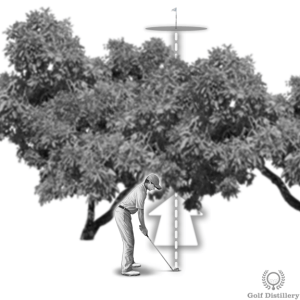

🌲 Trouble Shots
One bad shot OK - two kills your score. Pick the shot you'd make 9/10 times.
More →
Situations
Under Trees / Low Punch
- Club: 5-7 iron (lower loft)
- Ball Position: Back in stance
- Hands: Well forward at address and impact
- Swing: 3/4 backswing, abbreviated follow-through
- Grip Down: Choke down for more control
Around Obstacles

When dealing with trees or obstacles, assess clearance vertically and horizontally before club selection.
- Punch Shot: Low trajectory under branches (ball back, hands forward, abbreviated finish)
- Curved Shots: Draw or fade around obstacles (see Woods page for draw/fade setup)
- High Shots: Over obstacles - more loft, ball forward, full finish
- Smart Play: Aim for safe recovery angle - don't compound the error
- Risk Assessment: Can you realistically pull this off? When in doubt, pitch out sideways
Source: Punch shot technique from Golf Distillery; course management principles from general golf strategy